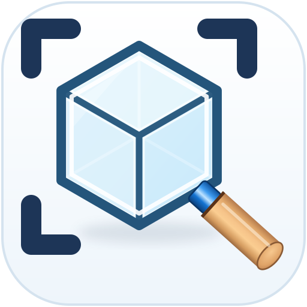
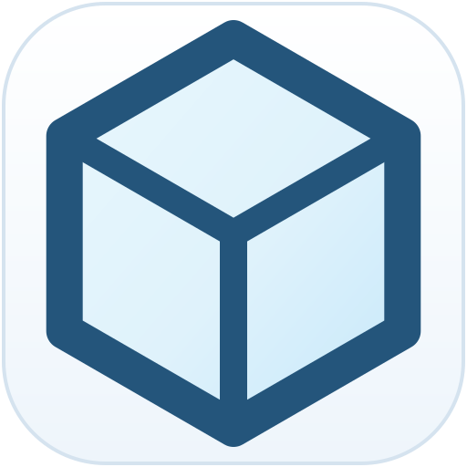
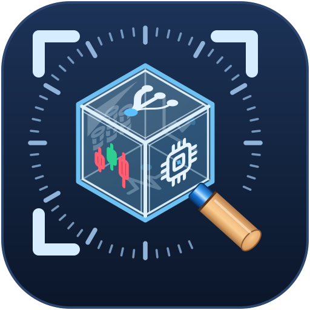
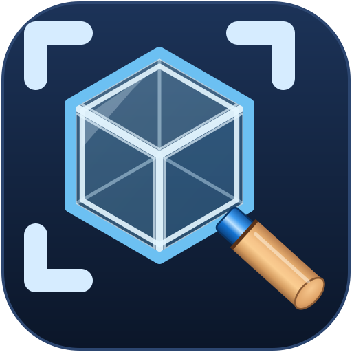
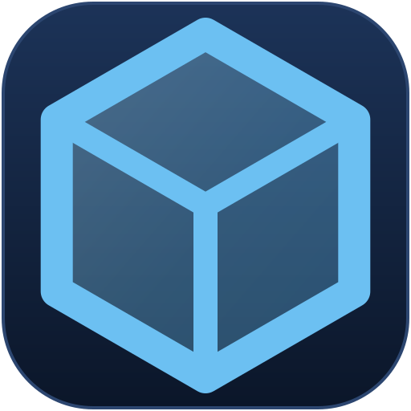
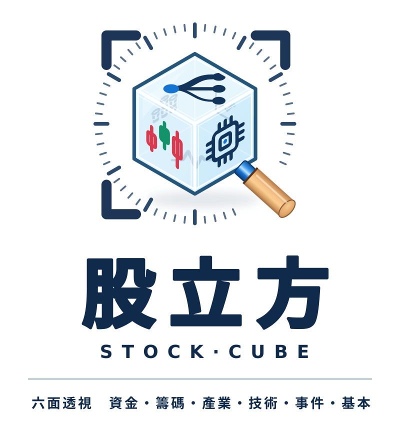
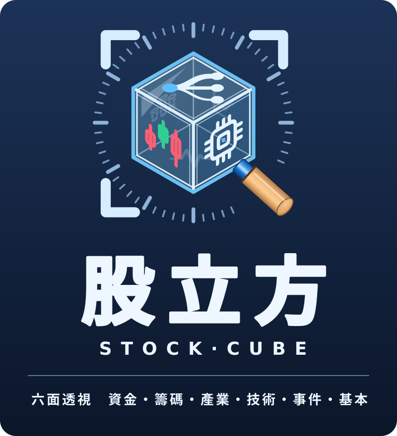
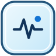
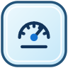

照 Andy 給的圖二：冰藍透明玻璃立方（等角正交投影）、深藍線條、深藍刻度環、粗角框（512 畫布上線寬 20）、藍色金屬環＋木柄放大鏡。
前三面：上＝資金（分流圖）、左＝技術（K 棒，紅漲綠跌）、右＝產業（晶片）；後三面隔著玻璃淡淡看得到：籌碼（左上）、基本（右上）、事件（下）。

48px
16px

48px
16px


事件面脈衝＋警示
大盤儀表外圈刻度48／24px 用 icon48*.svg（拿掉面上圖示與刻度環，只留玻璃立方＋放大鏡＋角框）；16px 用 icon16*.svg（只留立方輪廓＋Y 線）。
名稱用「股立方」（圖二的「台股立方」只當風格參考）。字型：中文 WenQuanYi Zen Hei、英文 DejaVu Sans。